A 2D convolution slides a kernel over an image and, at each pixel, sums the products of the kernel with the pixels underneath it. True convolution flips the kernel first (otherwise it is correlation):
\( (I * k)[i,j] = \sum_{u}\sum_{v} I[i-u,\, j-v]\; k[u,v] \)
Both versions use numpy only. A shared helper flips the kernel and zero-pads the image ("same" pads by kernel size // 2 so the output keeps the input size, "full" pads by kernel size - 1 so the output grows).
conv_4_loop uses four loops (two over output pixels, two over kernel entries) and conv_2_loop replaces the two kernel loops with one vectorized multiply and sum.
def prepare_convolution(image, kernel, mode='same'):
flipped_kernel = kernel[::-1, ::-1]
kh, kw = flipped_kernel.shape
ph, pw = (kh - 1, kw - 1) if mode == 'full' else (kh // 2, kw // 2)
padded = np.pad(image, ((ph, ph), (pw, pw)), mode='constant', constant_values=0)
return padded, flipped_kernel, padded.shape[0] - kh + 1, padded.shape[1] - kw + 1
def conv_4_loop(image, kernel, mode='same'):
padded, k, out_h, out_w = prepare_convolution(image, kernel, mode)
kh, kw = k.shape
out = np.zeros((out_h, out_w))
for y in range(out_h):
for x in range(out_w):
for ky in range(kh):
for kx in range(kw):
out[y, x] += padded[y + ky, x + kx] * k[ky, kx]
return out
def conv_2_loop(image, kernel, mode='same'):
padded, k, out_h, out_w = prepare_convolution(image, kernel, mode)
kh, kw = k.shape
out = np.zeros((out_h, out_w))
for y in range(out_h):
for x in range(out_w):
window = padded[y:y + kh, x:x + kw]
out[y, x] = np.sum(window * k)
return out
The filters are a 9x9 box filter and the finite difference operators Dx and Dy, applied to a grayscale photo of myself at full resolution (720 x 1280).
box_filter = np.ones((9, 9)) / 81.0
kernel_x = np.array([[1, 0, -1]])
kernel_y = np.array([[1], [0], [-1]])
raw_img = plt.imread('img/self_portrait.jpg')
grayscale_image = rgb2gray(raw_img)
box_out = conv_2_loop(grayscale_image, box_filter)
dx_out = conv_2_loop(grayscale_image, kernel_x)
dy_out = conv_2_loop(grayscale_image, kernel_y)
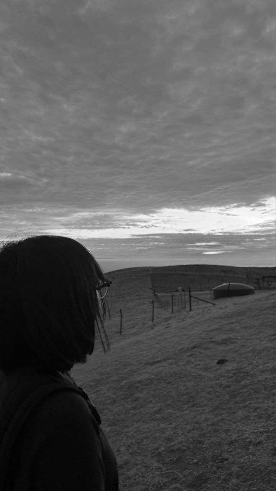
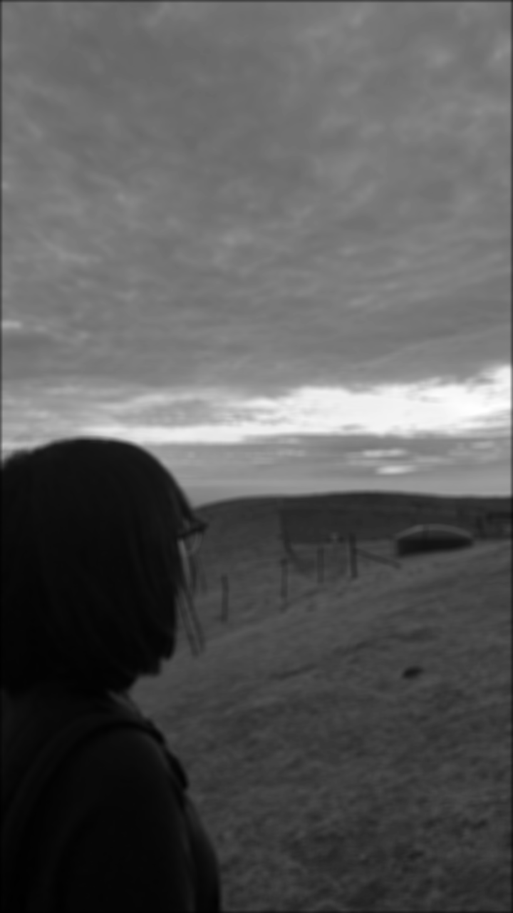
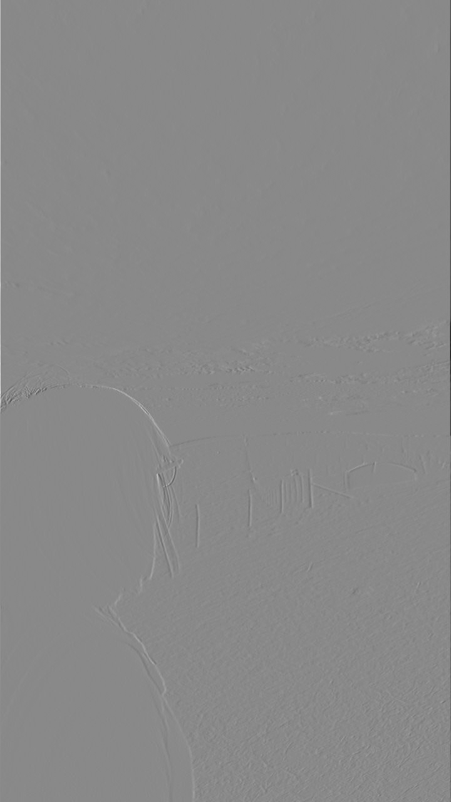
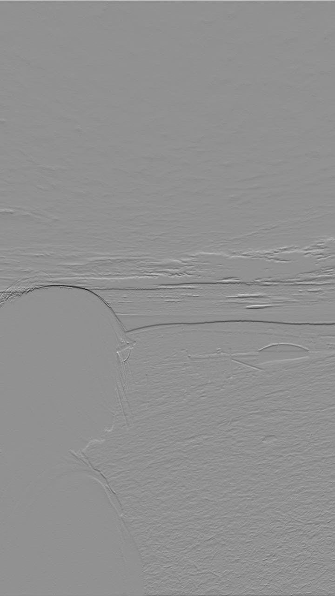
The box filter blurs the image. Dx responds to changes along x, so it highlights vertical edges, and Dy highlights horizontal edges. The derivative outputs contain negative values, so they are rescaled for display.
Both implementations match scipy.signal.convolve2d (np.allclose is True in every case below). Runtimes in seconds on the full 720 x 1280 image:
| Filter | Mode | 4 loops | 2 loops | scipy |
|---|---|---|---|---|
| box 9x9 | same | 23.50 | 2.61 | 0.0794 |
| box 9x9 | full | 23.89 | 2.64 | 0.0803 |
| Dx | same | 1.19 | 2.59 | 0.0084 |
| Dx | full | 1.16 | 2.61 | 0.0087 |
| Dy | same | 1.27 | 2.64 | 0.0144 |
| Dy | full | 1.27 | 2.60 | 0.0141 |
Runtime. scipy is fastest by a wide margin because its loops run in compiled C. For the 81-entry box filter the four-loop version is slowest (81 Python-level multiply-adds per pixel) and the two-loop version is about 9 times faster. For the tiny 3-entry Dx and Dy the order flips: the four-loop version only does 3 operations per pixel, while the two-loop version still pays numpy's per-call overhead at every pixel.
Boundaries. Zero padding matches scipy's default (boundary='fill', fillvalue=0), so the outputs are identical. "same" keeps the input size and "full" returns (H + kh - 1) x (W + kw - 1).
Zero padding darkens the border of the box-filtered image, since edge pixels are averaged with black; reflecting the border ('symm' in scipy) would avoid that.
On the cameraman image, convolving with Dx and Dy gives the partial derivatives in x and y (using scipy.signal.convolve2d).
The gradient magnitude combines them into a single edge-strength image:
\( \|\nabla I\| = \sqrt{(I * D_x)^2 + (I * D_y)^2} \)
kernel_x = np.array([[1, 0, -1]])
kernel_y = np.array([[1], [0], [-1]])
dx = convolve2d(grayscale_image, kernel_x, mode='same', boundary='symm')
dy = convolve2d(grayscale_image, kernel_y, mode='same', boundary='symm')
mag = np.sqrt(dx ** 2 + dy ** 2)
mag /= mag.max() # normalize to [0, 1] so thresholds are comparable
edges = mag > T # binarize
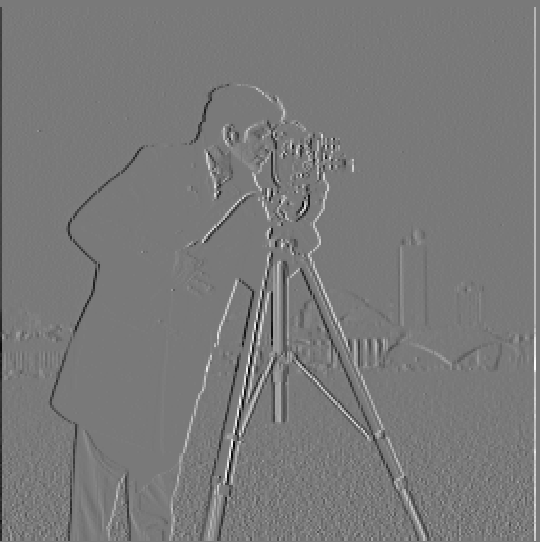
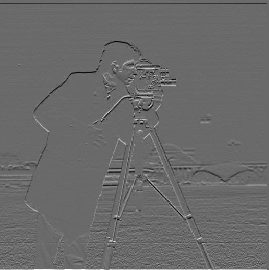
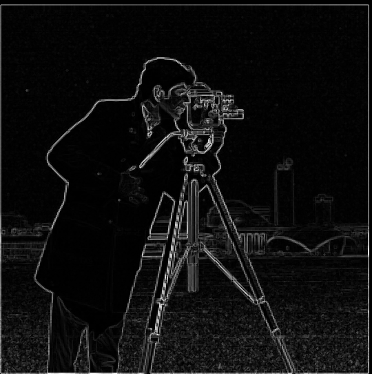
Dx picks up vertical edges (the coat outline, tripod legs) and Dy picks up horizontal edges (the camera body, the horizon line). The grass shows up as noise because a derivative amplifies high frequencies, including texture and grain. Smoothing the image first suppresses that noise, which is what Part 1.3 does with a Gaussian.
To turn the magnitude into an edge image, it is thresholded. Several values were compared:
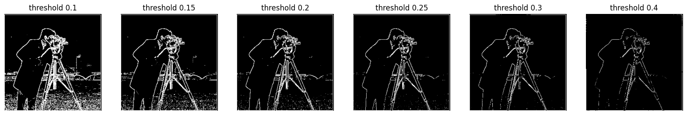
At 0.1 and 0.15 the grass is still full of noise. At 0.3 and 0.4 the noise is gone, but real edges also break apart, especially the tripod legs and the buildings on the horizon. Thus, threshold of 0.2 was chosen as the tradeoff: it keeps the coat outline, camera, and tripod mostly intact, at the cost of some remaining speckle in the grass.
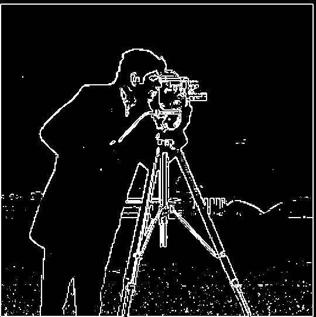
Border note. The thin frame around the image is a real edge (the cameraman image has a white border), not a padding artifact, since symmetric boundary handling (boundary='symm') is used.
Finite differences alone pick up noise, since any pixel-to-pixel change gets amplified. Smoothing the image first with a Gaussian filter G before taking the derivative should suppress that noise while keeping the real edges.
ksize, sigma = 13, 2 # ksize is about 6 * sigma
g = cv2.getGaussianKernel(ksize, sigma)
G = g @ g.T # 2D Gaussian: outer product of the 1D kernel with itself
blur = convolve2d(img, G, mode='same', boundary='symm')
dx1 = convolve2d(blur, kernel_x, mode='same', boundary='symm')
dy1 = convolve2d(blur, kernel_y, mode='same', boundary='symm')
mag1 = grad_mag(dx1, dy1)
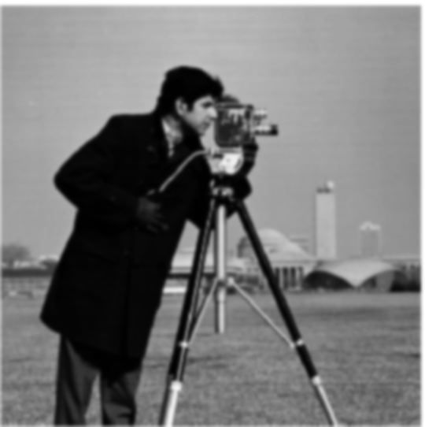
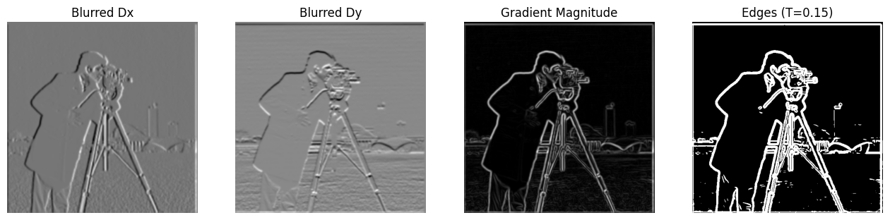
Differences from Part 1.2: blurring spreads out the fast pixel-to-pixel changes that the noise causes, so the grass noise is almost gone. The price is softer fine detail (e.g. inside the camera body) and thicker edges, since each edge is spread over several pixels. Because most of the noise is gone, a lower threshold works here (T=0.15 vs 0.2 in Part 1.2): at T=0.05 and 0.1 some speckle remains in the grass, while T=0.15 removes most of it and keeps the outlines of the coat, camera and tripod.
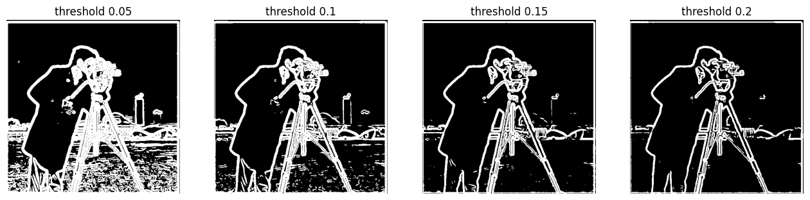
Since convolution is associative, \( (I * G) * D_x = I * (G * D_x) \), so G can be convolved with Dx and Dy once to build two combined filters, and the image only needs one convolution with each instead of two:
DoGx = convolve2d(G, kernel_x, mode='full')
DoGy = convolve2d(G, kernel_y, mode='full')
dx2 = convolve2d(img, DoGx, mode='same', boundary='symm')
dy2 = convolve2d(img, DoGy, mode='same', boundary='symm')
mag2 = grad_mag(dx2, dy2)
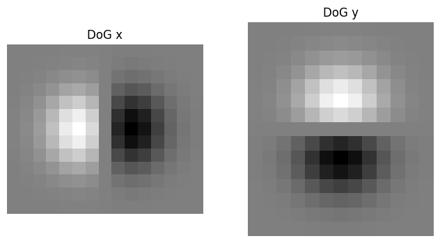
Verification. Since both methods compute the same math in a different order, they should match:
max diff dx: 1.0408340855860843e-15
max diff dy: 9.920449878242366e-16
Both are floating-point rounding error, essentially zero, confirming the two methods are identical.
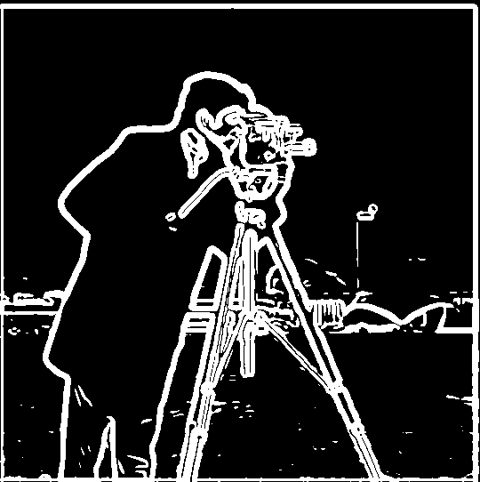
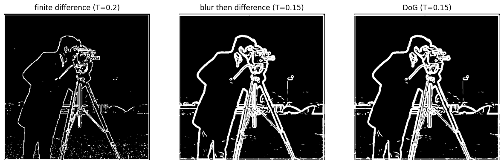
The raw finite difference (left) is noisiest, especially in the grass. Blurring first (middle) removes most of that noise while keeping the coat, camera, and tripod intact. DoG (right) matches the middle image exactly, as confirmed above.
Unsharp masking makes an image look sharper by adding back some of its own high-frequency detail. The high frequencies are found by subtracting a blurred (low-pass) version from the original:
\( \text{sharpened} = f + \alpha (f - f * G) \)
The Gaussian G is a low-pass filter, so \( f * G \) keeps only the low frequencies of the image, and \( f - f * G \) is what is left: the high frequencies (edges and fine texture). Adding \( \alpha \) times that back boosts the high frequencies relative to the low ones, which is why the image looks sharper.
This can be written as a single kernel, so the whole operation is one convolution instead of two:
def gauss(ksize, sigma):
g = cv2.getGaussianKernel(ksize, sigma)
return g @ g.T
def unsharp_kernel(ksize, sigma, a):
e = np.zeros((ksize, ksize))
e[ksize // 2, ksize // 2] = 1
return (1 + a) * e - a * gauss(ksize, sigma) # f + a(f - f*G) as one kernel
def sharpen(img, ksize, sigma, a):
return np.clip(cv2.filter2D(img, -1, unsharp_kernel(ksize, sigma, a)), 0, 1)
Applied to the Taj Mahal image and a photo of a building (ksize=13, sigma=2 for the Taj; ksize=25, sigma=4 for the building, a larger sigma since the building photo's detail sits at a coarser scale):
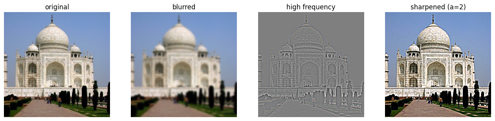
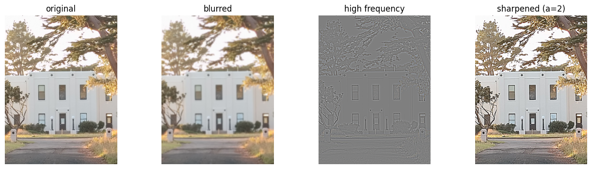
Varying the sharpening amount. Comparing a = 0.5 through a = 4 on both images:
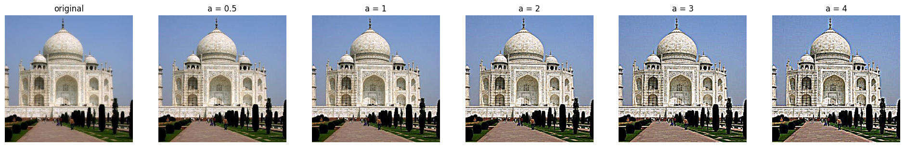
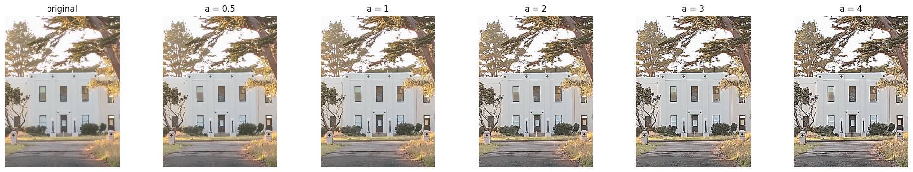
At a = 0.5 the change is subtle. At a = 1 or 2 the edges (window frames, roof trim, the dome's carved detail) are clearly more defined, without visible side effects. At a = 3 or 4 both images are oversharpened: edges get bright and dark halos, noise and compression artifacts in flat regions like the sky are amplified, and clipping flattens the brightest and darkest areas. a = 2 is shown above as the largest value before this degradation becomes visible.
Blur then resharpen. To test how well this recovers lost detail, the building photo (sharp) was blurred (ksize=19, sigma=3), then resharpened with an unsharp mask using the same Gaussian:
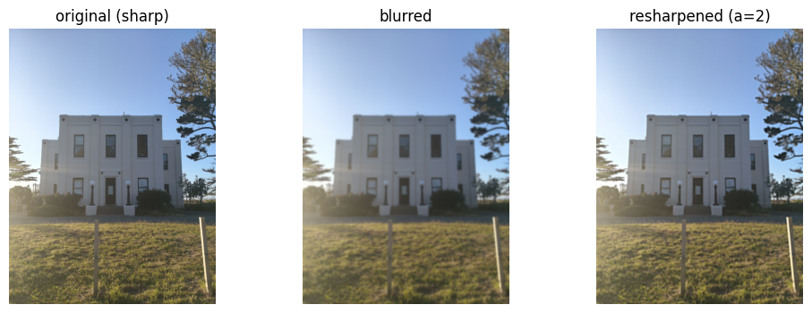
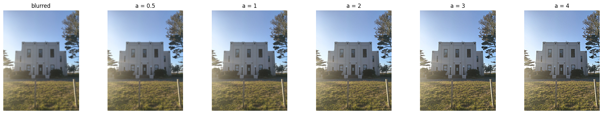
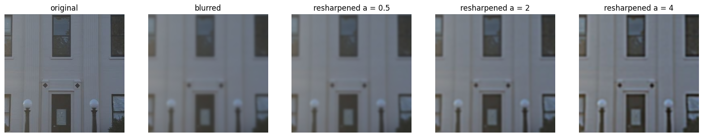
Resharpening recovers some of the lost edge definition but not the original detail. In the full-resolution crops the window frames, lamp posts and the small diamonds by the door become clearer at a = 2, but finer details of the original (such as the column edges and the door panel) stay softer. The mean absolute error against the original shows the same thing: 0.0355 for the blurred image, falling only to 0.0320 at a = 2 (about 10% lower) and rising again to 0.0345 at a = 4, where the edges become heavier and overshoot instead of showing real detail. Unsharp masking boosts the high frequencies that are left; it does not invert the blur.
A hybrid image combines the low frequencies of one image with the high frequencies of another. Up close the eye picks up fine detail (high frequencies), and from far away only the smooth structure (low frequencies) is visible, so the image is read differently depending on viewing distance. The low-pass is a Gaussian blur, and the high-pass is the image minus its Gaussian blur:
\( \text{hybrid} = f_{low} * G_{\sigma_{low}} + \alpha \, (f_{high} - f_{high} * G_{\sigma_{high}}) \)
def hybrid_image(im_high, im_low, sigma_high, sigma_low, high_weight=1.0):
low = gaussian_filter(im_low, sigma=(sigma_low, sigma_low, 0))
high = im_high - gaussian_filter(im_high, sigma=(sigma_high, sigma_high, 0))
hybrid = np.clip(high * high_weight + low, 0, 1)
return hybrid, high, low
Each color channel is filtered separately, and \( \alpha = 1 \) for all results. The images are aligned with the starter code by clicking two corresponding points on each image, then a 40 pixel margin is cropped before filtering.
In the starter code, the padding in recenter and the rotation use mode='edge' so there are no black borders.
A Gaussian with standard deviation \( \sigma \) pixels has a Gaussian frequency response with standard deviation \( 1/(2\pi\sigma) \) cycles per pixel, so that is used as the approximate cutoff.
| Hybrid | High-freq image | Low-freq image | σ high (cutoff) | σ low (cutoff) |
|---|---|---|---|---|
| Derek + Nutmeg | Nutmeg | Derek | 5 (0.032) | 10 (0.016) |
| Tiger + Cat | Tiger | Cat | 6 (0.027) | 10 (0.016) |
| Clock + Pizza | Clock | Pizza | 3 (0.053) | 6 (0.027) |
Sigmas were chosen by trying values and checking the result at full size and shrunk. In each pair the low-pass sigma is about twice the high-pass sigma, leaving a gap between the two bands so the blurred image does not compete with the detail image up close. Clock + Pizza uses the smallest sigmas because the clock's edges are thin (a larger high-pass sigma would thicken them into halos), while the pizza still needs sigma 6 to blur away the pepperoni texture.
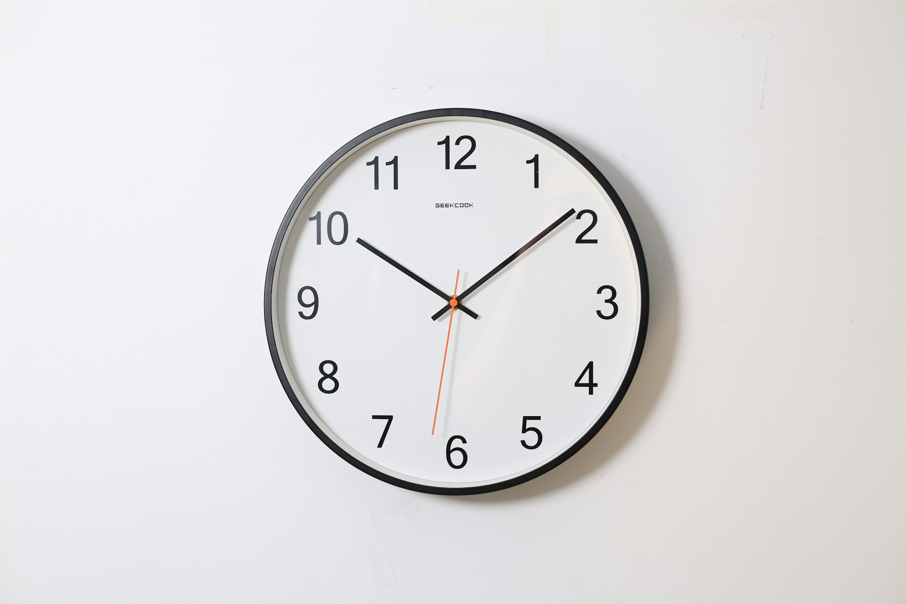
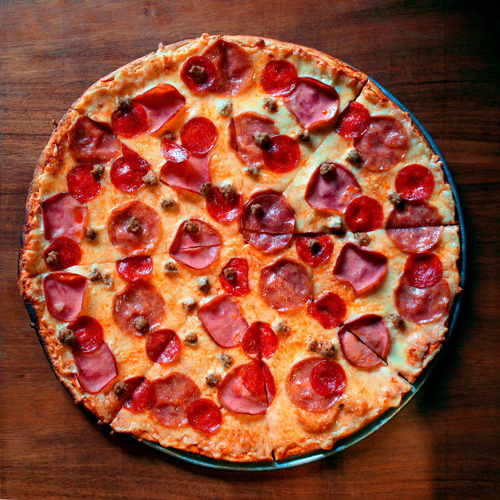
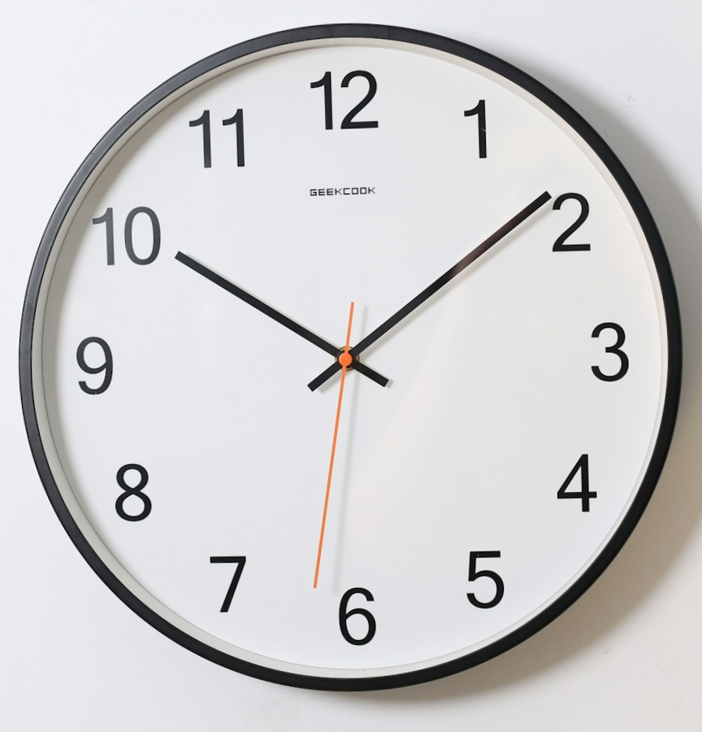
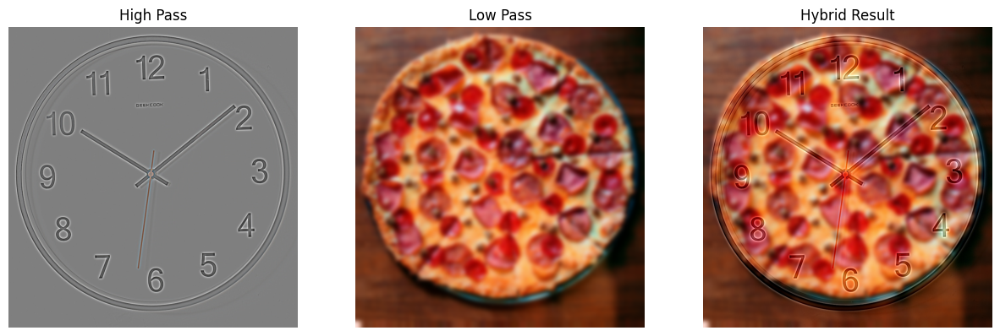
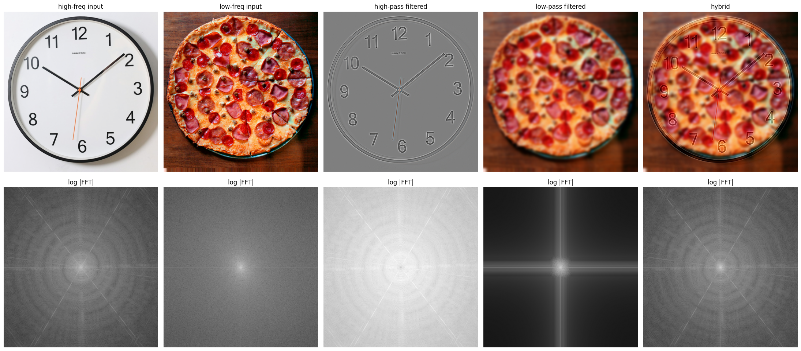
Fourier analysis. The clock spectrum has rings and diagonal streaks from the round rim, numerals and straight hands, while the pizza spectrum is more uniform with most of its energy near the center. The high-pass image has a dark center (the average brightness and lowest frequencies are removed) and keeps the clock's outer rings and streaks; the low-pass image keeps only a blob at the center, and the bright cross through it comes from the image borders, since the FFT treats the image as periodic. The hybrid spectrum has both: the pizza's low frequencies at the center and the clock's rings and streaks outside. Each panel is scaled independently, so compare shapes rather than brightness.
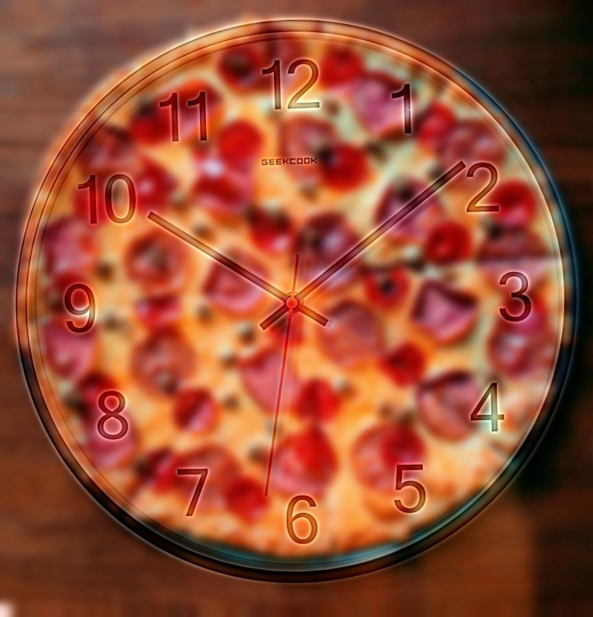
Up close the clock's numerals and hands read clearly. When the image is small, the pizza takes over.
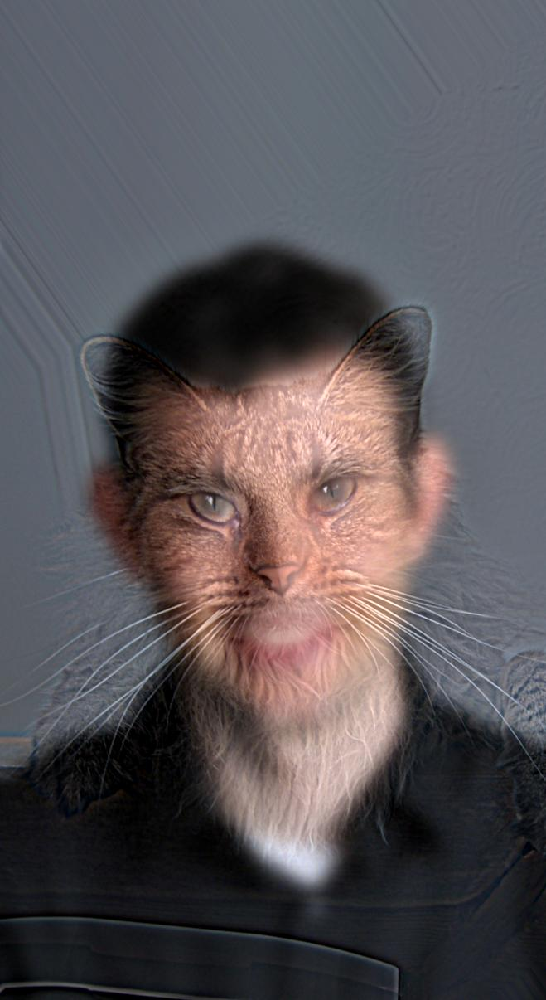
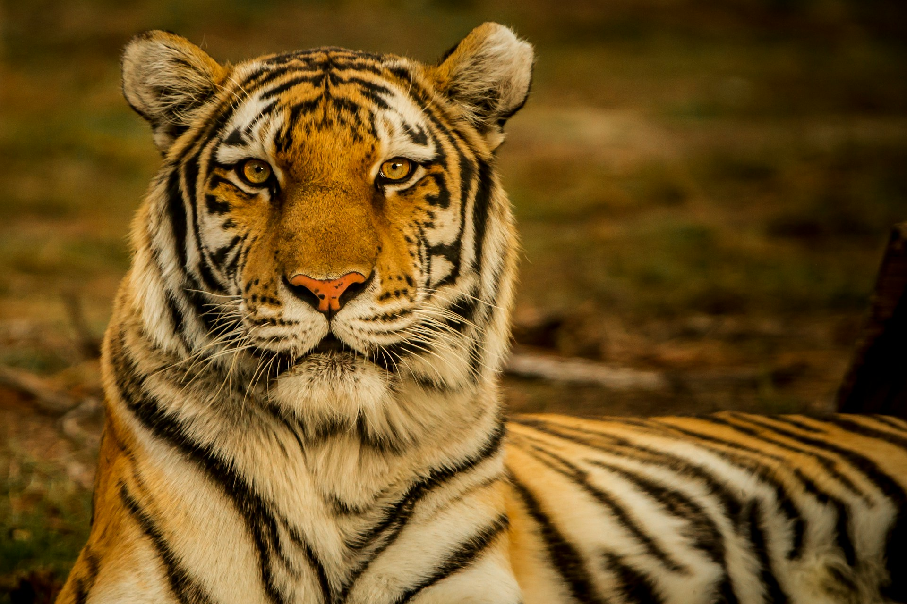
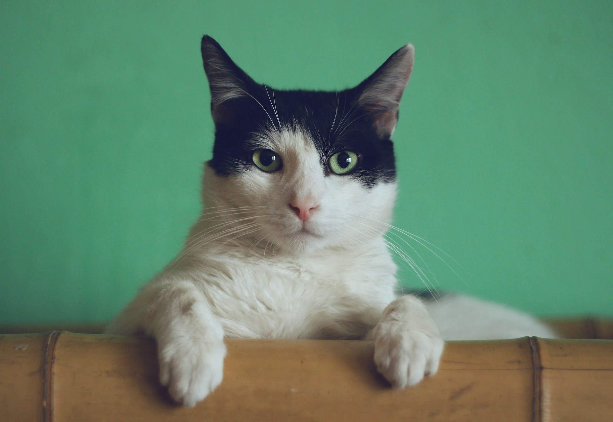
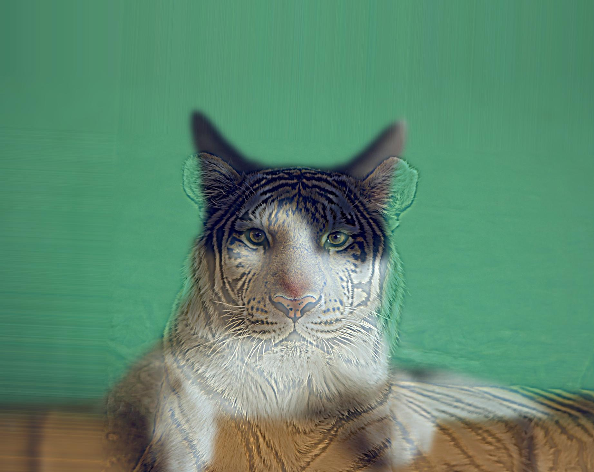
In Tiger + Cat, the faint horizontal and vertical streaks in the green background come from the mode='edge' padding,
which stretches the border pixels into lines. This was preferred over black borders.
The cat's ears sticking out above the tiger's are a limit of the two-point alignment.
A stack is a pyramid without the downsampling: every level has the same size as the input. In the Gaussian stack, level 0 is the original image and level i is the original blurred with \( \sigma_i = 1.5 \cdot 2^{i-1} \), i.e. \( \sigma = 1.5, 3, 6, 12, 24 \) for levels 1 to 5 (6 levels in total). The Laplacian stack is the difference of neighboring levels, \( L_i = G_i - G_{i+1} \), and its last level is the low-pass residual \( L_5 = G_5 \), so each \( L_i \) is a band-pass image. The Laplacian levels sum back to the original image (reconstruction error 1.11e-16 for both the apple and the orange), and no built-in pyramid functions are used; the only library call is the Gaussian blur.
def create_gaussian_stack(img, levels, sigma):
stack = [img.copy()]
for i in range(1, levels):
cur_sigma = sigma * (2 ** (i - 1)) # 1.5, 3, 6, 12, 24 ...
stack.append(gaussian_filter(img, sigma=(cur_sigma, cur_sigma, 0)))
return stack
def create_laplacian_stack(gstack):
lstack = [gstack[i] - gstack[i + 1] for i in range(len(gstack) - 1)]
lstack.append(gstack[-1]) # last level: the low-pass residual
return lstack
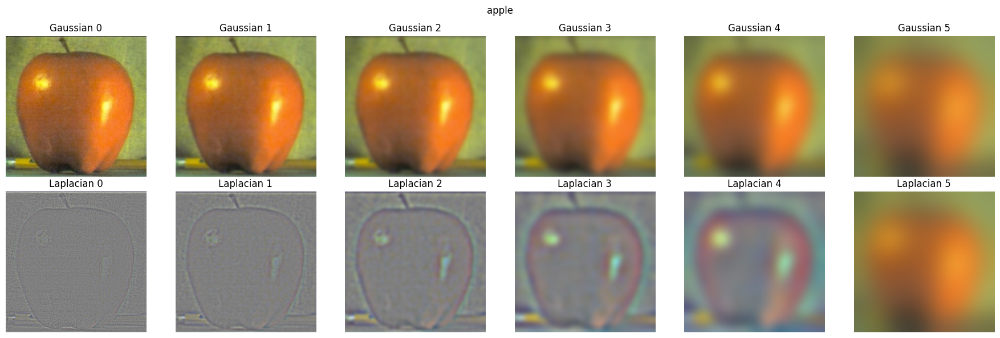
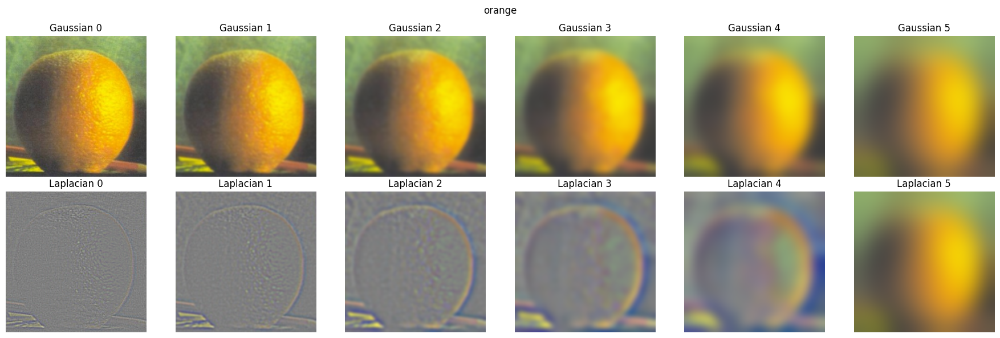
Figure 3.42 in Szeliski shows the Laplacian levels of the masked apple, the masked orange, and their sum. The mask is a vertical step function with its own Gaussian stack, so each mask level is blurred as much as the matching image level (level 0 unblurred, level 2 with \( \sigma = 3 \), level 4 with \( \sigma = 12 \)). Rows 1 to 3 are Laplacian levels 0, 2 and 4 (high, medium and low frequencies) and the last row is the sum over all levels. Left to right: masked apple (a, d, g, j), masked orange (b, e, h, k), and their sum (c, f, i, l).
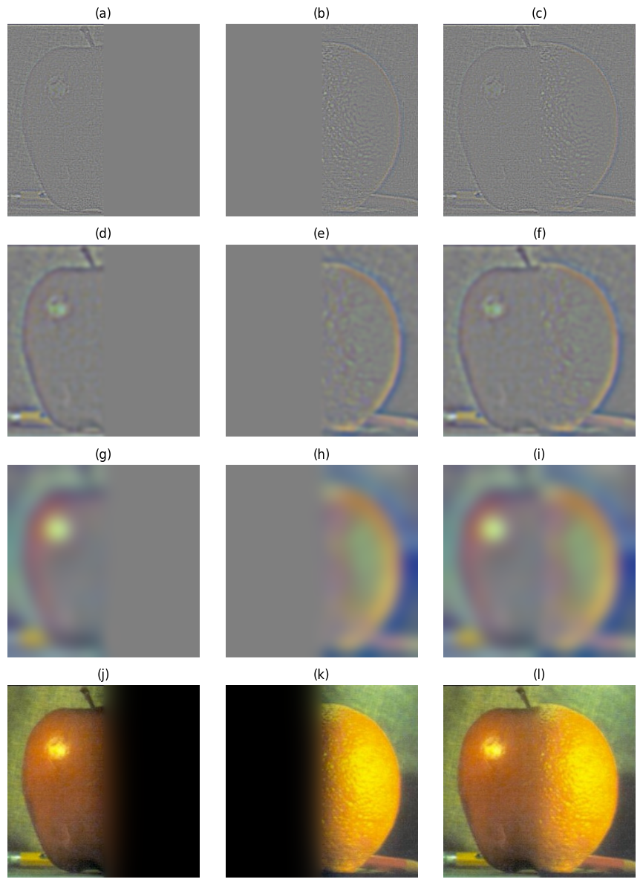
In the high-frequency row the halves meet at a hard cut because the mask is not blurred at that level; in the low-frequency row the heavily blurred mask lets the apple and orange overlap over a wide band. Summing the rows gives the final blend, with no visible seam.
Two images A and B are blended with a mask M (1 where A should show). Following the handout, the mask also gets a Gaussian stack, and every Laplacian band is blended with its own level of the mask:
\( \text{blend} = \sum_i \big( M_i \, L^A_i + (1 - M_i)\, L^B_i \big) \)
High-frequency bands are blended with a nearly sharp mask and low-frequency bands with a heavily blurred one, so fine detail switches abruptly while smooth color and brightness change gradually, which hides the seam. Because stacks are used instead of pyramids, the algorithm on page 226 of the paper would leave a visible seam, so the mask version from page 230 is used. All results use 6 levels and \( \sigma = 1.5 \) (doubling at each level), except the moon blend below.
a_stack = create_laplacian_stack(create_gaussian_stack(im_a, levels, sigma))
b_stack = create_laplacian_stack(create_gaussian_stack(im_b, levels, sigma))
m_stack = create_gaussian_stack(mask, levels, sigma) # the mask is blurred more at each level
blended_stack = [m_stack[i] * a_stack[i] + (1 - m_stack[i]) * b_stack[i] for i in range(levels)]
result = np.clip(sum(blended_stack), 0, 1)


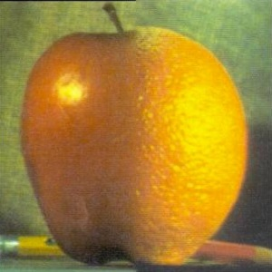
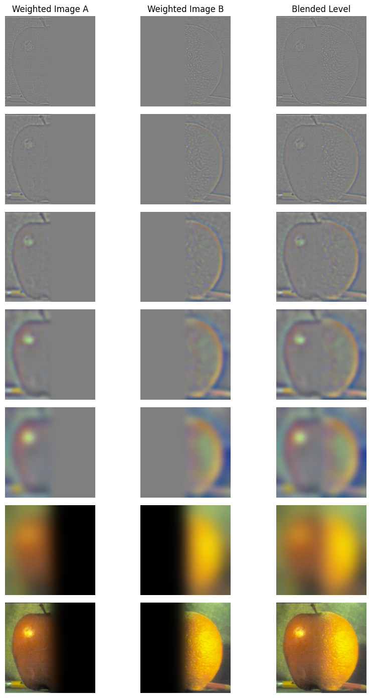
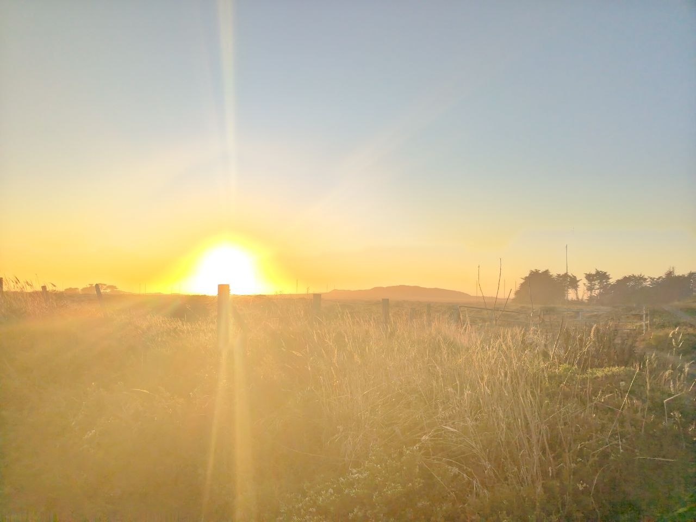
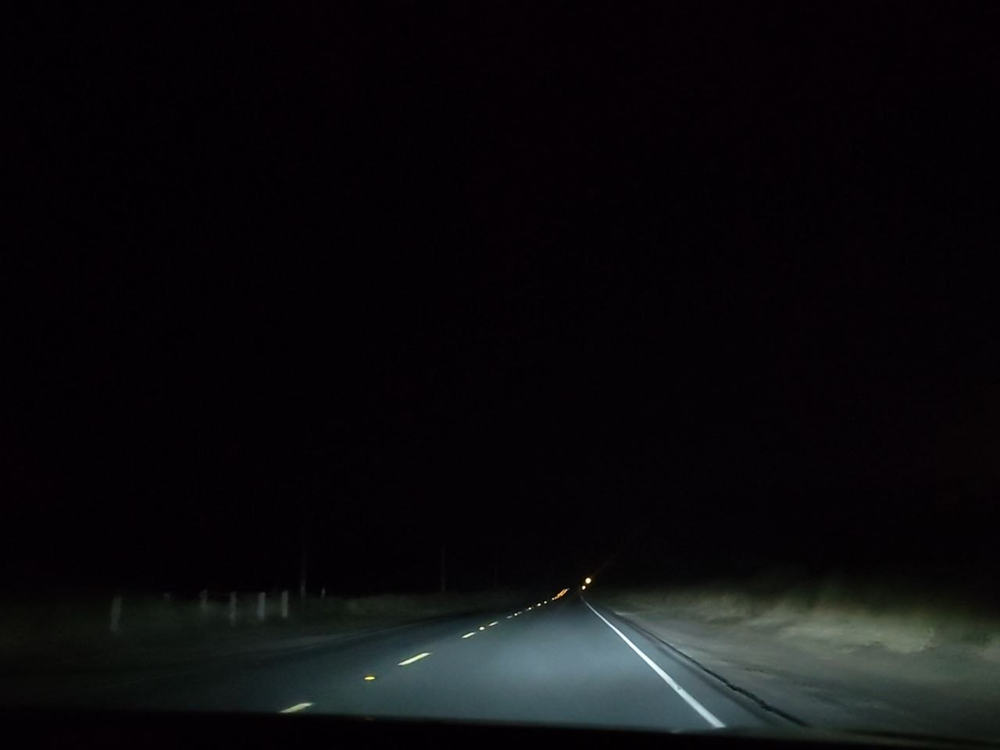
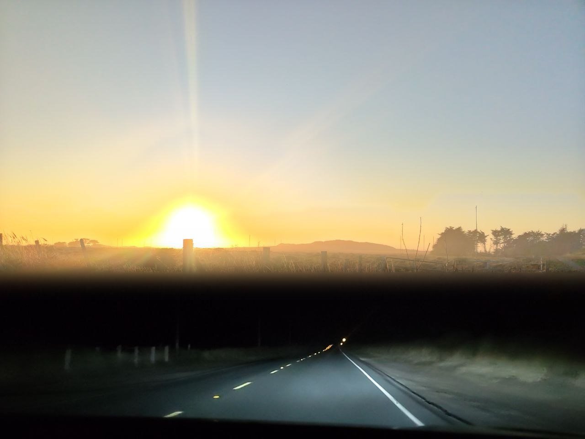
The seam is placed along the grass line so the sunset sky stays on top and the road below. The night photo is almost black in its upper region, so the transition reads as a smooth fade from sunset into darkness.
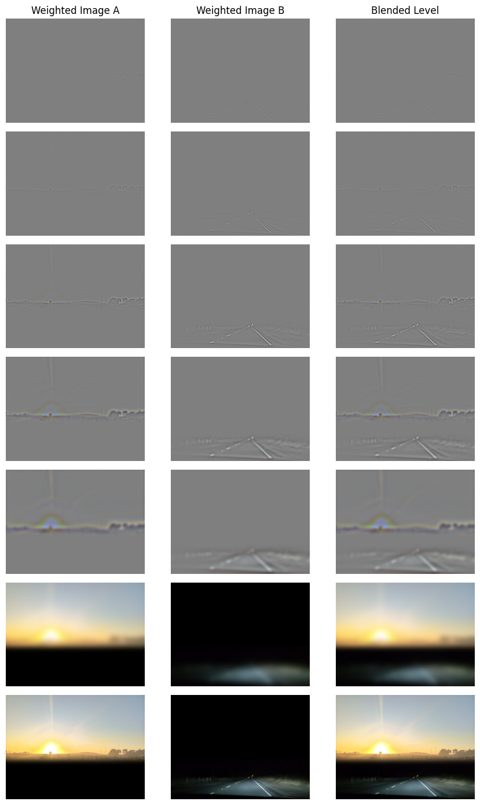
The second custom blend uses a circular mask instead of a straight seam. The moon photo is cropped to a square, scaled, tinted toward the sky color and pasted near the top of the beach photo; a disk mask (radius 0.65 times half the width of the pasted square) selects the moon, and outside the disk image A is the beach itself, so both inputs are identical there. The mask is feathered (sigma 3) so the moon's edge fades into the sky, and this blend uses sigma = 2 instead of 1.5.
tint = sun[int(h * 0.10):int(h * 0.35)].mean(axis=(0, 1)) # average sky color
m_resized = np.clip(m_resized * (tint / tint.max()), 0, 1) # warm the moon
pasted = sun.copy()
pasted[cy - r_moon:cy + r_moon, cx - r_moon:cx + r_moon] = m_resized
hard = make_circular_mask(sun.shape, center=(cx, cy), radius=int(r_moon * 0.65))
moon_canvas = np.where(hard[..., None] > 0, pasted, sun) # moon only inside the disk
moon_mask = gaussian_filter(hard, sigma=3) # feathered edge
result = run_part_2_4(moon_canvas, sun, mask_input=moon_mask, sigma=2.0, name="moon_sun_blend")
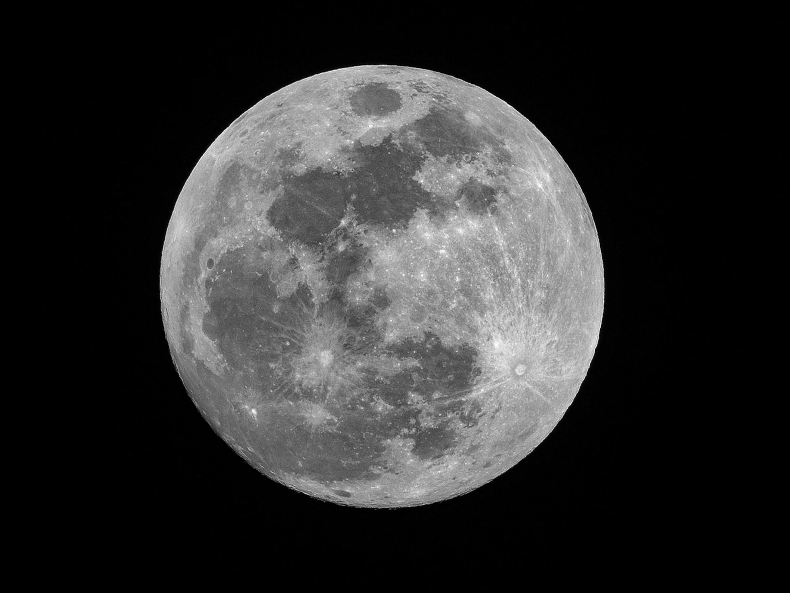
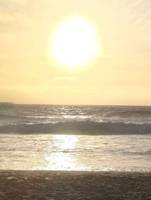
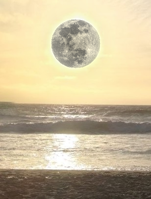
Design choices. An earlier version pasted the whole moon square, including its black corners; the low-frequency levels then contained that black, which dimmed the area around the moon and left a pale gray halo. Keeping the moon only inside the disk removes it. A faint pale glow still remains around the moon; it comes from the sun in the beach photo, which sits where the moon is placed, and it reads as light scattered around the moon, so it was kept.
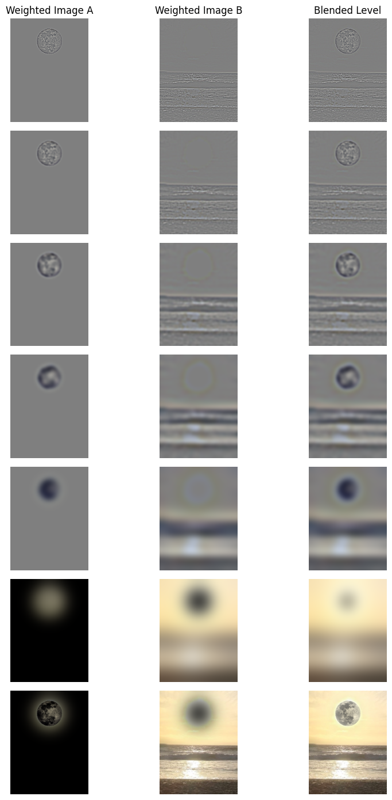
The most important thing I learned from this project is how much an image's "sharpness" and "identity" depend on which frequency bands it contains, not just on its raw pixel values. Unsharp masking (Part 2.1) made this concrete: sharpening is just boosting the high band, and it cannot bring back detail that a blur has already removed. I had fun playing with hybrid images (Part 2.2), which showed how two different images can share one picture because our visual system reads different frequency bands at different viewing distances. Multiresolution blending tied everything together. Blending band by band, instead of blending the raw pixels directly, is what actually hides the seam, since each frequency band gets an amount of mask blur matched to its scale (fine detail switches quickly, smooth color changes gradually). Seeing the Laplacian levels add back up to the original image also made it clear that a frequency decomposition loses nothing, so each band can be worked on separately and then put back together.